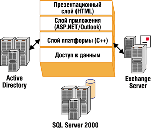
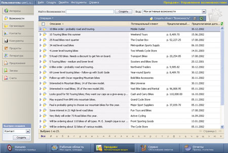
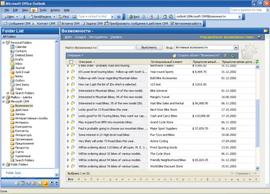
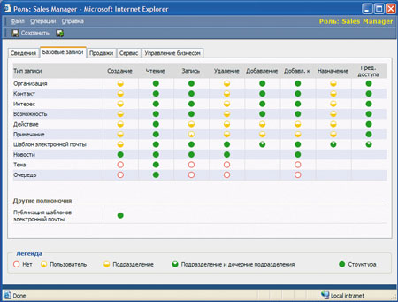

Эдуард Давиджан, Виталий Титов
Customer Relationship Management (управление отношениями с клиентами) - это не столько технология, сколько бизнес-стратегия компании. В основе ее лежит понимание поведения клиентов и использование этого понимания для удержания старых и привлечения новых клиентов, а также увеличение их прибыльности, лояльности и степени удовлетворенности. Программный продукт Microsoft CRM создавался как бизнес-решение, нацеленное на реализацию этой стратегии. Microsoft далеко не первой вышла на рынок CRM-систем: первая версия Microsoft CRM появилась на рынке чуть более полутора лет назад.
Выпуску продукта предшествовало кропотливое исследование рынка и предлагаемых на нем решений. К созданию продукта были привлечены специалисты с большим опытом в области CRM и продаж. На сегодня Microsoft CRM используют тысячи компаний разных размеров и отраслей во всем мире. Осенью этого года ожидается выпуск российской версии системы.
Функциональность
Microsoft CRM состоит из двух функциональных модулей - "Автоматизация продаж" и "Обслуживание клиентов (Сервис)", которые можно приобретать и использовать как независимо друг от друга, так и совместно.
Модуль "Автоматизация продаж" предназначен для работы сотрудников подразделений продаж и маркетинга. Сотрудники отдела маркетинга с его помощью могут заносить в систему информацию о потенциальных клиентах и проводить персонализированные рассылки писем. Для менеджеров по продажам это возможность всегда иметь под рукой детальную информацию о покупателях, обо всех взаимодействиях с ними, вести работу с потенциальными заказчиками, используя сценарии продажи, формировать коммерческие предложения, иметь полную информацию о конкурентах, а также эффективно распоряжаться своим временем.
В модуле "Автоматизация продаж" представлены данные не только о заказах клиентов, но и о потенциальных продажах, поэтому для руководителя доступна актуальная отчетность по прогнозированию продаж, количеству проигранных и выигранных сделок и т. д. Поскольку в Microsoft CRM отслеживается вся цепочка, начиная с первого контакта с потенциальным клиентом до выставления коммерческого предложения и размещения заказа, это позволяет контролировать отдачу каждой из маркетинговых кампаний.
Модуль "Обслуживание клиентов (Сервис)" предназначен для автоматизации работы сервисных отделов - подразделений компании, в задачи которых входит оперативная реакция на запросы клиентов при предпродажной работе и послепродажном обслуживании. Microsoft CRM позволяет отслеживать статусы всех обращений клиентов в компанию, ставить их в очередь (список ожидания) или сразу назначать их "правильному" сотруднику для оперативного ответа. Можно также настроить автоматические процедуры эскалации запросов на более высокий уровень, если клиент не получил ответа на запрос в установленные сроки. Единая база знаний, которая ведется в модуле "Обслуживание клиентов", позволяет сотрудникам быстро найти информацию для ответа на часто задаваемый вопрос или решения типичной проблемы клиента.
Цели и технологии
При создании Microsoft CRM перед разработчиками ставилось несколько ключевых целей.
Низкая стоимость владения (TCO). Установка и внедрение приложения должны выполняться быстро. Приложение должно обеспечивать простой переход на новые версии, быть простым в администрировании и таким, чтобы пользователи могли легко освоить работу с ним.
Минимальные затраты на адаптацию и модификацию продукта. В каждой организации есть свои специфичные бизнес-процессы, поэтому готовое приложение заведомо не решит всех задач компании. Система должна быть легко настраиваемой и модифицируемой, чтобы она могла в максимальной степени автоматизировать задачи различных компаний. Кроме того, требуется, чтобы она могла служить платформой для создания специализированных тиражируемых решений сторонними разработчиками.
Высокая масштабируемость. Приложение должно обеспечивать высокую производительность при работе большого количества пользователей.
Персональное использование. Для наибольшей эффективности CRM-приложение должно давать пользователю возможность работать с системой в автономном режиме, чтобы сотрудник, даже не имея доступа к корпоративной сети или Интернету, мог со своего компьютера работать с СRM-системой, в частности, иметь под рукой всю информацию о своих клиентах, а подключившись к корпоративной сети, мог синхронизировать данные с сервером Microsoft CRM.
Для того, чтобы реализовать эти цели, Microsoft CRM использует множество готовых технологических элементов, кратко охарактеризованных ниже.
Active Directory - центральная часть системы безопасности, используется для отражения организационной структуры, аутентификации пользователей, настройке их доступа к решению.
Exchange Server обеспечивает тесную интеграцию почтовой службы и Microsoft CRM. Все электронные письма, полученные Microsoft CRM, сохраняются в виде действий, привязанных к тому или иному объекту системы: Контакту, Обращению клиента, Заказу...
SQL Server 2000 отвечает за хранение данных Microsoft CRM.
Microsoft .NET - это стратегия Microsoft, заключающаяся в использовании программного обеспечения как сервиса.
XML широко используется в рамках Microsoft CRM для представления Web-страниц и обмена сообщениями между сервисными слоями, что позволяет реализовать одну из самых важных целей при создании продукта - расширяемость.
XML Web-сервисы позволяют интегрировать Microsoft CRM с другими приложениями, независимо от языка программирования и операционной системы, под управлением которой работает стороннее приложение.
SOAP - межплатформенный протокол на базе XML для доступа к данным и функциональности вне зависимости от платформы. SOAP служит для предоставления доступа для сторонних программ к более чем 800 программным интерфейсам (API) Microsoft CRM.
Internet Information Service (IIS) - Web-сервер в составе Windows Server, используемый для представления страниц.
ASP.NET - часть .NET Framework для построения Web-приложений и XML Web-сервисов.
Архитектура
Microsoft CRM состоит из четырех логических слоев: презентационный слой, слой приложения, слой платформы и слой данных (рис. 1).
|  | Рис. 1. Общая архитектура Microsoft CRM.
|
Презентационный слой CRM находится на вершине архитектуры и состоит из клиентов двух типов: Web-клиент и Microsoft Outlook, выступающий как Windows-клиент.
Web-клиент построен на базе Internet Explorer. Исполняемые на клиентской стороне скрипты и страницы генерируются приложением с использованием ASP.NET и IIS. Возможности Dynamic HTML позволяют переносить часть нагрузки на клиентскую машину, разгружая таким образом сервер, снижая объем трафика и обеспечивая большую масштабируемость решения.
Outlook-клиент Microsoft CRM также иногда называют модулем автоматизации продаж для Outlook, поскольку его основная задача - обеспечить менеджерам по продажам доступ к модулю "Автоматизация продаж" в Microsoft CRM. Он обеспечивает возможность работать с Microsoft CRM в двух режимах: автономном на локальном компьютере (offline) и подключенном к серверу Microsoft CRM (on-line).
Ключевой компонент презентационного слоя - Common Form Component. Для того, чтобы пользователи не замечали разницы при работе с системой, оба этих клиента используют общий модуль обработки форм, который отвечает за размещение форм, представлений, их формат и передачу данных (на рис. 2 и 3 представлены два вида интерфейса пользователя). Для разработчика такой подход означает, что достаточно в одном месте изменить интерфейс пользователя, и изменения будут доступны для клиентов обоих типов. Если пользователь на момент публикации обновленного интерфейса находился в автономном режиме, т. е. не был подключен к корпоративной сети, то изменения вступят в силу для клиента Outlook на его компьютере в момент синхронизации с основной базой. Таким образом, при синхронизации Outlook-клиента с основной БД происходит синхронизация не только данных, но и пользовательского интерфейса.
|  |
| Рис. 2. Web-клиент Microsoft CRM.
|
|  |
| Рис. 3. Outlook-клиент Microsoft CRM.
|
Аналогично презентационному слою, слой приложения состоит из двух компонентов: один для работы Web-клиента, другой - для работы Outlook-клиента Microsoft CRM. Web-клиент для обработки запросов и получения страниц использует ASP.NET, а клиент Outlook вместо этого использует облегченное приложение, размещенное на самой машине клиента. Это позволяет обойтись без установки Web-сервера на каждой машине, где установлен Outlook-клиент Microsoft CRM.
Основная функция слоя приложения - предоставлять запрошенные страницы презентационному слою и обеспечить большую часть проверки данных. В самом приложении содержится небольшая часть бизнес-логики и возможностей модификации системы; ключевая же и самая значительная часть бизнес-логики сосредоточена в слое платформы. Слой приложения для взаимодействия со слоем платформы использует XML-сообщения.
Слой платформы, также называемый сервисным слоем (Service Tier), - это сердце Microsoft CRM. Основная его задача - работа с ограниченным списком бизнес-объектов предметной области CRM, такими, как Контакты, Организации, Возможности, Обращения, Конкуренты, Контракты и т. д., а также применение специфичных для CRM правил для трансформации этих объектов.
Слой платформы Microsoft CRM использует метаданные и абстрагирован от уровня данных -это упрощает обновление и расширение продукта. Кроме того, слой платформы использует метаданные, чтобы защитить себя от любых изменений в нижележащей базе данных. Термин "метаданные" означает описательную информацию о каждом объекте данных (список атрибутов у объекта данных, их тип и т. д).
Зачем нужна база метаданных? Хотя Microsoft SQL Server и обеспечивает большой объем метаданных о хранимых данных, эта информация ограничена представлением физической модели данных. Microsoft CRM нуждается в большем количестве логической информации для управления тем, как используется база данных, а не только дополнительной информации о том, что хранится в базе данных.
Например, при создании нового экземпляра объекта (если, скажем, в систему заводится новая организация) платформа получает из метаданных объекта информацию о том, есть ли заинтересованные стороны для обработки события "создать". Существует два типа таких обработчиков: первый служит для выполнения настроенных под конкретную компанию-клиента бизнес-правил, второй - для использования бизнес-логики, заложенной во внешних приложениях.
Если происходит изменение в нижележащей таблице - например, к объекту Контакт был добавлен новый атрибут "Любимое блюдо", то в этом случае нет необходимости вносить изменения в платформенный слой. Это позволяет легко модифицировать Microsoft CRM, не внося вручную изменений в программный код.
Еще одна задача платформы - представление в виде сервисов правил для манипуляции объектами предметной области. Кроме того, платформа отвечает за контроль доступа к объектам предметной области и доступа к базе данных, а также выступает триггером для запуска бизнес-правил. Этот слой также обеспечивает обработку входящей и исходящей почты через CRM Exchange E-mail-маршрутизатор.
Слой данных - самый нижний слой архитектуры; он состоит из базы данных (SQL Server 2000) и четко определенного подслоя доступа к данным. При установке Microsoft CRM на SQL Server создается четыре базы данных:
- БД Microsoft CRM - основное хранилище данных Microsoft CRM;
- БД метаданных - содержит описание объектов, которые хранятся в БД Microsoft CRM, информацию о всех типах объектов системы, их атрибутах и взаимосвязях и многое другое;
- БД Crystal Enterprise Reporting - в ней хранится внутренняя информация Crystal Enterprise Reporting, используемая для построения отчетности в Microsoft CRM;
- Дистрибуционная база Microsoft CRM - на ней построен процесс репликации данных с локальными MSDE-базами данных пользователей клиента Outlook в Microsoft CRM. Эта база служит для отслеживания синхронизации автономных пользователей клиента Outlook с основной БД Microsoft CRM.
XML Web-сервисы и Microsoft CRM
Microsoft CRM обладает готовой функциональностью для управления отношениями с клиентами, но в дополнение к этому предоставляет инструменты, которые позволяют модифицировать систему, чтобы она могла решать задачи большинства организаций. При разработке продукта учитывалось, что каждая компания обладает определенной спецификой, у каждого клиента есть свои требования к системе, поэтому в некоторых случаях требуется расширение и интеграция Microsoft CRM с другими корпоративными приложениями. Кроме того, система построена таким образом, чтобы сторонние разработчики могли создавать специализированные решения, расширяющие функциональность Microsoft CRM. К слову сказать, таких зарегистрированных в Microsoft специализированных решений на базе Microsoft CRM уже насчитывается более 300.
Наиболее мощный способ расширения Microsoft CRM - интеграция с использованием Web-сервисов. Большая часть документации для разработчика (Microsoft CRM Software development kit, SDK) посвящена именно тому, как использовать объекты Microsoft CRM при помощи Web-сервисов. Через Web-сервисы разработчик может взаимодействовать с программными интерфейсами Microsoft CRM, что позволяет, например, программно инициировать в системе те или иные действия. В Microsoft CRM доступно более 800 функций API.
Важно отметить, что Web-сервисы - это отнюдь не потайной вход в Microsoft CRM. Даже пользовательский интерфейс продукта обращается к платформе Microsoft CRM через Web-сервисы. Разработчики, создававшие Web-клиент и Outlook-клиент Microsoft CRM, использовали те же самые функции, которые описаны в SDK. Поскольку программные интерфейсы Microsoft CRM доступны для вызова через SOAP, то внешние приложения могут взаимодействовать с Microsoft через Интернет и корпоративный брандмауэр при соответствующих настройках безопасности.
Одна из ключевых особенностей использования XML Web-сервисов в Microsoft CRM - интеграция с другими приложениями, такими, как Outlook и Office XP. Например, XML Web-сервис в Outlook позволяет работать с контактами, встречами, действиями, возможностями.
Безопасность и настройка прав доступа
Для аутентификации пользователя в Microsoft CRM используется Active Directory. Это означает, что, как только пользователь зашел в корпоративную сеть, он сразу может работать с продуктом, ему не требуется повторная аутентификация. В Microsoft CRM описывается иерархическая структура организации, которая также представлена в Active Directory для проверки прав доступа каждого пользователя.
Идеология прав доступа, заложенная в системе, ориентирована именно на особенности предметной области - управления отношениями с клиентами. Мы уже отмечали, говоря о платформе, что в Microsoft CRM существует объектная модель предметной области, специфичная для CRM, которая манипулирует такими объектами, как Организации, Контакты, Возможности, Обращения, Действия, Продукт, Литература и т. д.
Часть объектов имеют "владельца" - ответственного сотрудника (пользователя системы), и, исходя из того, к какому подразделению он относится, эти объекты прикрепляются к тому же подразделению. Некоторые объекты предметной области, например, каталог продуктов, конкуренты, библиотека литературы, не относятся ни к одному из подразделений, будучи общими для всех пользователей системы.
После того как пользователь зашел в систему, на уровне слоя платформы идет проверка привилегий пользователя и его уровня доступа.
Проверка привилегий пользователя. Привилегия в Microsoft CRM указывает, какие действия над объектом может произвести пользователь (создавать, читать, записывать, удалять...). Поскольку привилегии прописываются отдельно для каждого объекта, то пользователь, например, может иметь привилегию "удалить Контакт", но не иметь привилегии "удалить Организацию".
Существуют специфичные для CRM виды привилегий, затрагивающие не только сам объект, на котором определена привилегия, но и его связи. Таковы, например, привилегии "прикрепить" или "прикрепить к", дающие пользователю право прикрепить один объект к другому. Например, чтобы добавить контакт к организации, нужно иметь привилегию "Прикрепить к" для объекта Контакт и "Прикрепить" для объекта Организация.
Существует также особый вид привилегий "Назначение", дающий пользователю право назначить другого пользователя ответственным за тот или иной экземпляр объекта (например, передать запрос клиента для ответа другому сотруднику). С помощью еще одного вида привилегий, "Предоставление доступа", сотрудник может предоставлять другим сотрудникам доступ к экземпляру объекта для совместного использования (например, дать доступ к информации о потенциальной сделке сотруднику из другого подразделения, подключая его к совместной работе над сделкой).
Проверка уровня доступа. Уровень доступа описывает, по отношению к каким экземплярам (записям) каждого типа объектов пользователь может использовать свои привилегии. Задание уровня доступа опирается на организационную структуру предприятия. Уровни доступа пользователя, которыми оперирует Microsoft CRM, перечислены в таблице.
Уровни доступа пользователя в Microsoft CRM
| Уровень | Описание |
| Нет доступа | Пользователь не может применить привилегию |
| Пользователь | Пользователь может использовать свои привилегии только для тех записей, за которые он ответственен |
| Подразделение | Пользователь может использовать свои привилегии для работы со всеми записями, которые относятся к его подразделению |
| Подразделение и дочерние подразделения | Пользователь может использовать свои привилегии для работы со всеми записями, которые относятся к его подразделению или дочерним подразделениям |
| Структура | Пользователь может использовать свои привилегии для работы со всеми записями, которые могут относиться к любому подразделению в структуре организации |
Например, если у пользователя есть привилегия "Удаление организаций" с уровнем доступа Подразделение и привилегия "Чтение" для информации об организациях с уровнем доступа Структура, то он сможет видеть все организации, которые содержатся в картотеке организаций Microsoft CRM, но удалить из системы может только те организации, с которыми работает его подразделение (например, региональный отдел продаж).
Роли. Если бы для каждого пользователя в системе приходилось индивидуально задавать весь перечень привилегий и уровней доступа, настройка прав доступа была бы чрезвычайно трудоемкой. Для упрощения процедуры настройки в Microsoft CRM используются роли. Каждому пользователю назначается своя роль или несколько ролей, которые он выполняет в подразделении.
При установке Microsoft CRM в системе автоматически прописываются преднастроенные роли, специфичные для предметной области: генеральный директор, маркетолог, директор по продажам, менеджер отдела продаж, директор по сервису, менеджер отдела сервиса и другие. Преднастроенные роли содержат в себе привилегии и уровни доступа, настроенные на основании анализа практического опыта (эти данные были получены в ходе проведенного Microsoft исследования должностных ролей и полномочий в большом числе компаний). При настройке системы под организационную структуру конкретного предприятия Microsoft CRM позволяет как создавать новые роли, так и вносить изменения в привилегии и уровень доступа в преднастроенных ролях.
На рис. 4 показан экран системы с настройкой роли менеджера по продажам. Пустым кружочком на нем отмечены привилегии, по которым у пользователя нет доступа, желтым цветом - ограниченные привилегии, зеленым - привилегии, по которым пользователь имеет максимальный уровень доступа к объектам.
|  |
| Рис. 4. Экран с настройкой роли менеджера по продажам.
|
Таким образом, встроенная в Microsoft CRM система безопасности и настройки прав доступа решает три ключевые задачи: обеспечить совместную работу пользователей с информацией, защитить данные от несанкционированного доступа, сделать настройку прав доступа легкой и удобной для администратора.
Заключение
Microsoft CRM - это бизнес-приложение, построенное на технологии .NET. Microsoft CRM имеет интерфейс для применения Web-сервисов, использует Microsoft .NET Framework, несколько слоев абстракции и ряд серверных продуктов Microsoft - Exchange Server, SQL Server, Windows Server. Благодаря своей архитектуре Microsoft CRM легко масштабируется и обеспечивает одновременную работу большого количества пользователей.
Для защиты данных и настройки прав доступа в Microsoft CRM предназначены удобные средства администрирования, построенные на использовании системы аутентификации Active directory.
Microsoft CRM адаптируется под потребности предприятий как в терминах расширения базы данных, добавления новых атрибутов, изменения пользовательского интерфейса, так и в плане настройки бизнес-правил, специфичных для компании. Поскольку логика Microsoft CRM доступна в качестве XML Web-сервисов, сторонние разработчики могут расширять функциональность продукта, создавая специализированные решения на его основе. Кроме того, это позволяет проводить интеграцию с практически любыми приложениями, независимо от платформы, на которой они работают, и языка, на котором написаны.